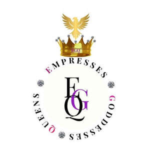

Trade Mark Journal No.2025/033 15 August 2025
UK00004246061 7 August 2025 (9,16,18,25,35,41)

- Class 9
- Downloadable e-books; Downloadable videos; Downloadable software; Downloadable podcasts; Downloadable videocasts; Downloadable publications; Downloadable video files; Downloadable posters; Downloadable postcards; Downloadable electronic brochures; Downloadable video recordings; Downloadable electronic newsletters; Downloadable electronic books; Downloadable electronic reports; Electronic publications, downloadable; Publications (Electronic -), downloadable; Downloadable digital assets; Downloadable image files; Downloadable educational media; Downloadable printable planners and organizers; Downloadable graphic design templates; Audio recordings; Audio visual recordings; Audio cassettes; Digital audio tapes; Audio digital tapes; Speakers [audio equipment]; Pre-recorded audio tapes; E-books; Educational computer software; Podcasts; Videocasts.
- Class 16
- Books; Non-fiction books; Educational books; Printed books; Instruction manuals; Teaching manuals; Instructional manuals for teaching purposes; Printed teaching activity guides; Training manuals; Instruction sheets; Manuals for instructional purposes; Printed seminar notes; Instructional and teaching material; Printed lessons; Blank journal books; Blank writing journals; Journals; Paper teaching materials; Printed lectures; Year planners; Day planners; Weekly planners; Monthly planners; Daily planners; Planners [printed matter]; Paper book markers; Blank paper notebooks; Printed cards; Motivational cards; 3D decals for use on any surface; School supplies [stationery].
- Class 18
- Bags; Evening bags; Tote bags; Gym bags; Grocery tote bags; Canvas bags; Carry-all bags; Drawstring bags; Make-up bags; Cross-body bags; Toiletry bags; Makeup bags; Leather bags and wallets; Messenger bags.
- Class 25
- Clothing; Ready-to-wear clothing; Wristbands [clothing]; Hoods [clothing]; T-shirts; Printed t-shirts; Sweatshirts; Hoodies; Head wear.
- Class 35
- Consultancy regarding business organisation and business economics; Business consultancy to individuals; Business networking; Business consulting; Consultancy (Professional business -); Professional business consultancy; Business consultancy (Professional -); Business consultancy; Business administration; Professional business consulting; Business marketing services; Business management services; Business consultancy to firms; Business promotion; Business planning and business continuity consulting; Business project management services; Business research; Business networking services; Business administration consultancy; Online business networking services; Business organization consultancy; Business strategy services; Advisory services relating to business management and business operations; Business planning services for enterprises; Business Enquiries; Business management organisation; Business administration and management; Business promotion services; Business consultancy services; Professional business consultations; Business marketing consulting services; Business introduction services; Business research services; Business planning services; Business inquiries; Writing of business project studies; Business surveys; Business organisation consulting; Marketing; Digital marketing; Online marketing; Marketing studies; Product marketing; Business marketing consultancy; Advertising and marketing; Advertising and marketing consultancy; Marketing services; Marketing consultancy; Advertising and marketing services; Marketing consulting; Advertising, marketing and promotion services; Marketing, advertising and promotion services; Influencer marketing; Advice in the field of business management and marketing; Event marketing; Affiliate marketing; On-line advertising and marketing services; Marketing research; Targeted marketing; Promotional marketing; Advertising, promotional and marketing services; Internet marketing; Promotion [advertising] of business; Providing marketing consulting in the field of social media; Promotion, advertising and marketing of on-line websites; Marketing forecasting; Advertising copywriting; Marketing analysis services; Sales promotion; Business management consultancy, also via the Internet; Copywriting for advertising and promotional purposes; Communication media (Presentation of goods on -), for retail purposes; Brand strategy services; Advertising services to create corporate and brand identity; Brand positioning; Brand creation services; Professional business consultancy services.
- Class 41
- Education; Vocational education; University education services; Academies [education]; Education, teaching and training; Academy services (Education -); Education and instruction; Health education; Computer education training; Adult education services; Training or education services in the field of life coaching; Education and training services in relation to business management; Conducting of classes; Arranging of classes; Arranging professional workshop and training courses; Conducting courses, seminars and workshops; Training courses; Training of teachers; Arranging and conducting of seminars and workshops; Training and instruction; Organisation of courses using open learning methods; Providing online training seminars; Publishing; Book publishing; Publishing of journals; Publishing of instructional books; Publishing of electronic books and journals online; Online digital publishing services; Publishing of educational material; Electronic publishing services; Life coaching (training); Career counselling and coaching; Coaching; Coaching services; Teaching; Teaching of meditation practices; Teaching services; Education and training; Meditation training.
Marie Butler